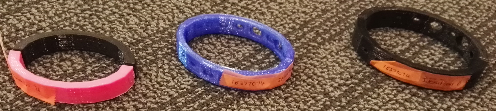

Digital Fabrication
In this paper I have been able to produce 8 two-piece items using a laser cutter and 3D printer. Five of these items are iterations - or practises - and three are the final products. I made a jewelry box using the laser cutter and several bracelets using the 3D printer. I documented my progress on my own Wordpress blog.Laser cut objects
The first three objects were required to be made using the laser cutter. I first created the files in Illustrator, then printed them in the universal laser cutter at the Wellington FabLab. The initial iteration of the jewelry box was created using 3mm corrugated cardboard and the other two with 4mm poplar plywood.
3D printed objects
These bracelets were made with a form of plastic called PLA. I created the files on SketchUp, then transferred them to Cura (the software used to communicate with the 3D printers). Next, they were transferred onto an SD card and inserted into the 3D printer 'Ultimaker 2'.
Combination objects
The combination objects were created using both the laser cutter and 3D printer. I made two bracelets using the 3D printer and created wooden inserts using the laser cutter. These inserts are engraved with symbols of Summer and Winter to follow my chosen theme of nature.